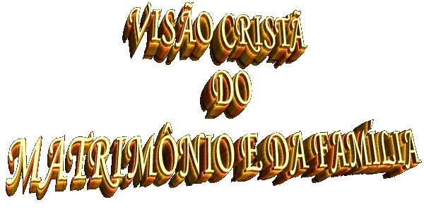
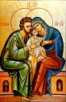
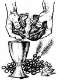

Para o cristão consciente, a realidade do Matrimônio e da Família não é uma realidade meramente natural, mas algo que desde sempre pertence ao plano e a obra do CRIADOR. ELE é o autor de todas as coisas e tudo tem feito por sua infinita bondade para o “bem” e proveito da humanidade de todas as gerações, os seus filhos. E procede assim porque DEUS é o principio e a fonte do Amor, ELE é o próprio Amor. Criando o homem e a mulher a sua imagem, os quis capazes de um amor total, que no Casamento é fonte de nova vida. “Sede fecundos, multiplicai-vos, enchei a terra...” (Gn 1, 28) E assim compreendemos que, o Amor de DEUS foi transmitido a Alma imortal de cada ser e na convivência inseparável da Alma com o Corpo formado, ela o envolve e o convida ao amor espiritual.
Todavia, a intenção do CRIADOR pode, contudo, ficar encoberta aos olhos do “homem pecador” e assim, o Plano Divino pode ser mal interpretado e deformado por ele.
Por essa razão, a compreensão plena da Vontade de DEUS é também um objeto de procura e de reflexão para a Igreja. O Concilio Vaticano II considerou necessário esclarecer a doutrina católica sobre o Matrimônio e a Família, dela apresentando uma visão mais completa e dentro do contexto católico. Não acentua unicamente, como muitas vezes foi realçada na sociedade patriarcal, a finalidade da procriação e educação dos filhos, mas ressalta que o Matrimônio é um “pacto” ou “aliança” de amor entre os cônjuges, para uma completa comunhão de vida entre eles.
O Concílio evidencia a fecundidade intrínseca ao Matrimônio, a sua abertura para a sociedade e a Igreja, e, ao mesmo tempo, o seu caráter de união íntima de amor entre os esposos, que nele encontram a possibilidade de seu crescimento e da realização pessoal.
A história da humanidade lida com os olhos da fé, conforme está na Sagrada Escritura, é, portanto uma história de salvação. A mulher e o homem encontram nela, desde as origens, a armadilha do pecado que destrói sua paz e felicidade. [A tentação no Paraíso (Gn 3, 1-20)]. Mas, encontram também, desde o início, a misericórdia de DEUS, que perdoa e salva.
Após o castigo do dilúvio, DEUS prometeu a Noé a salvação da humanidade, fato que é interpretado como a primeira Aliança. Após a dispersão dos povos, o SENHOR escolheu o povo de Abraão, Israel e Moisés para continuar sua Aliança e conduzir todos os homens ao Reino da justiça e da paz que prometeu.
O homem peca e trai a DEUS, apesar da Aliança. Mas o SENHOR não abandona o seu povo e o acolhe sempre de novo. Esta é a fidelidade de DEUS. Nela os profetas verão um “casamento” do CRIADOR com as suas criaturas, o seu povo.

Pelo Sacramento do Batismo as pessoas se tornam “Filhos de DEUS” e ao longo da existência são convidados pela fé a serem sustentadas e vivificadas espiritualmente pelo Sacramento da Eucaristia, o Corpo, Sangue, Alma e Divindade do próprio DEUS. Por esse caminho elas também podem dar ao amor conjugal a dimensão de um verdadeiro sacramento. Isto porque, no lar os esposos cristãos realizando o seu sacerdócio cotidiano, pelo exercício de suas orações ao SENHOR, pelo digno e competente cultivo da responsabilidade paternal, do exato cumprimento de seus compromissos profissionais, assim como de todas as práticas devocionais, é sem dúvida, uma participação no sacerdócio de CRISTO, transformando o seu lar numa “Igreja Doméstica”, onde a presença do SENHOR é real e verdadeira, porque ELE Mesmo disse: “onde dois ou três estiverem reunidos em Meu Nome, ali estou EU no meio deles”. (Mt 18, 20) Então, o Sacramento do Matrimônio revela ao cristão que o amor conjugal é acolhido pelo amor de DEUS e é guiado e enriquecido pelo poder redentor de CRISTO, dentro do imenso e admirável mistério da união do Amor de CRISTO por sua Igreja, ou seja, do Amor de CRISTO por cada um dos cristãos.
O AMOR DE DEUS FUNDA A INDISSOLUBILIDADE

Nesta perspectiva sacramental, de que o Casamento é verdadeiramente um Sacramento Divino, compreende-se melhor a razão porque a Igreja afirma a “indissolubilidade” do Matrimônio.
O Amor de DEUS para com a humanidade, da mesma forma como é o amor de CRISTO pela Igreja, é um amor dedicado, total, definitivo e sem arrependimentos. DEUS jamais faltará a sua palavra e ao seu compromisso com todas as gerações. ELE nunca mudará e nem irá alterar a grandeza e a intensidade do seu eterno e incomensurável Amor. O Amor de DEUS é imutável. Analogamente, o casamento cristão, transformado em Sacramento pela imensidão do Amor Divino, torna-se sagrado porque sendo sacramento, é santo, não pode ser violado, “torna-se um laço indissolúvel, por toda a vida”.
Com outras palavras, sabemos que o CRIADOR criou os seres humanos a sua imagem e a sua semelhança, em dois sexos, o homem a imagem do “Poder de DEUS” e a mulher, a imagem do “Amor de DEUS”. Unindo o amor ao poder pelo Matrimônio, o Casal se torna uma admirável força transformadora do mundo, da sociedade que habita e de toda a humanidade; em primeira instância como célula criadora unindo e formando uma Família; logo, seguindo a união das diversas células criadoras, promoverão a união das diversas Famílias, construindo e dando forma a sociedade em que habitam; as centenas e milhares de sociedades em consequência edificam a nação que têm o seu espaço no planeta; cada nação, junto com as demais, ocupa as áreas dos continentes e administram o mundo. Então, como é fácil compreender, a Família é o fundamento e alicerce principal da sociedade e do universo. Se as Famílias são boas, bem dimensionadas e adequadamente orientadas, serão sem dúvida a base sólida onde edificarão sociedades equilibradas e há de imperar o direito, a justiça e o amor a DEUS.
Com este objetivo DEUS nos criou e instituiu o Casamento, que tem por finalidade realizar uma Santa e Indissolúvel União entre um homem e uma mulher, dando-lhes a graça de se amarem e manterem viva a chama do amor, vivendo em harmonia, em fidelidade e educando cristãmente os seus filhos.
"Então JAVÉ DEUS fez cair um torpor sobre o homem, e ele dormiu. Tomou uma de suas costelas e cresceu carne em seu lugar. Depois, da costela que tirara do homem, JAVÉ DEUS modelou uma mulher e a trouxe ao homem. Então o homem exclamou: Esta sim é osso de meus ossos e carne de minha carne! Ela será chamada mulher porque foi tirada do homem. Por isso um homem deixa seu pai e sua mãe, se une à sua mulher, e eles se tornam uma só carne". (Gn 2, 21-24)
JESUS confirmou a união, criando o Sacramento do Matrimônio:
"De modo que já não são dois, mas uma só carne. Portanto, que o homem não separe o que DEUS uniu". (Mt 19, 6)
É imensa a quantidade de graças que o ESPÍRITO SANTO derrama sobre as pessoas, através do Sacramento do Matrimônio, as quais têm como primordial objetivo a conversão do coração e a santificação de todos, fazendo com que sejam verdadeiros santos, conforme a vontade suprema do CRIADOR:
"Sede santos, porque EU, vosso DEUS, sou Santo". (Lv 19, 2)
Como consequência de uma observação mais minuciosa, vemos que o Casamento Religioso é mesmo “Indissolúvel” por decreto e determinação Divina (que o homem não separe o que DEUS uniu); e também, que pelas graças do Sacramento, o homem e a mulher não são mais duas pessoas distintas, mas se unem formando “Um Único Ser” (se tornam uma única carne).
Esta realidade é um convite ao homem e a mulher à exercitarem com as graças do Matrimônio, um Amor sério e dedicado, cultivando o diálogo franco e honesto, a fidelidade, a responsabilidade conjugal, a compreensão mútua, a renúncia em favor do outro e se mantendo unidos na oração, no sofrimento e na alegria, como providências inteligentes e corretas para alcançarem a felicidade.
MATRIMONIO E FAMÍLIA, TAREFAS A SEREM CONCRETIZADAS NO COTIDIANO
O Matrimônio e a Família, mesmo sendo Sacramento, não devem ser imaginados como realidades perfeitas e acabadas, desde o início. Há que se considerar além da presença do pecado, das limitações e fraquezas humanas, o próprio crescimento dos cônjuges, pessoal, profissional e social, que tornam o Matrimônio e a Família realidades a serem construídas dia a dia, num perseverante processo de vida, que deve buscar sempre uma perfeição maior, possibilitando através do interesse, dos carinhos e da fidelidade, a dilatação do amor que os une, dispondo-se a renúncias e a sacrifícios para alcançar a harmonia matrimonial e a paz familiar.
O Sacramento significa garantia porque dá aos cônjuges à graça de DEUS, a presença atuante de CRISTO na vida do casal, possibilitando-os a edificarem a vida a dois assumindo as responsabilidades familiares com respeito, atenção e dignidade.
O ESPÍRITO SANTO se manterá alerta e disponível sempre que for invocado, para que haja o perdão mútuo e a reconciliação, quando a fraqueza humana e o pecado, através da vaidade, do orgulho e da intransigência, abrir divisões e semearem conflitos entre os familiares. A força do cristão está na graça de DEUS, isto é, na bondade e no Amor de JESUS para conosco, que nos auxilia, ampara, inspira e nos ajuda diretamente a ultrapassar todos os tipos de obstáculos que querem interferir na existência dos cônjuges.
A graça de CRISTO, contudo, não levará o cristão a desprezar os meios humanos para vencer as suas dificuldades. Ao contrário, em cada caso ela estimulará as pessoas a reagir, inspirando atitudes e suscitando procedimentos que vão contribuir de maneira eficaz para o ajustamento do casal, o aprofundamento da união íntima, a educação dos filhos, como também iluminando os familiares dedicados na continua procura de ensinamentos necessários a formação de uma verdadeira consciência cristã.
O AMOR NO CASAMENTO
(Resumo do objetivo matrimonial)
Existe um adágio popular que diz: para cada fechadura existe uma chave, e em algum lugar vou encontrar a outra metade de minha laranja, “a minha cara metade”.
As pessoas jovens pela própria natureza são sonhadoras, têm muitos desejos e formulam muitos ideais para a sua vida. E naturalmente, um destes sonhos é achar a cara metade, ou seja, o pedaço que falta para completar a sua existência. E então, às vezes acontecem fatos notáveis no cotidiano: o olhar de um cruza de repente a face do outro, ou acontece um encontrão, um toque sem querer ou às vezes “querendo mesmo”, outras vezes propositalmente é espargido um perfume “embriagador” impregnando a atmosfera; em outras oportunidades ao cruzar com a outra pessoa na rua ou em qualquer local lança uma palavra provocadora, com a intenção de produzir surpresa, curiosidade ou humor, colocando o homem e a mulher um diante do outro, fazendo com que o sonho comece a se tornar uma realidade em suas vidas.
Vem o Casamento, que é o comprovante definitivo, sagrado e indissolúvel elo, resultado da oficial promessa de amor que o casal fez diante de DEUS.
Começa uma vida a dois que para se consolidar e gerar felicidade exigirá de ambos um intenso diálogo sincero e honesto, objetivando harmonizar o interesse pessoal e o modo de vida de cada um, num patamar que seja o ideal para eles. As propostas do coração de um deverão encontrar as respostas firmes e decididas no outro, se dispondo a uma doação incondicional, ao cultivo da fidelidade, da renúncia em favor do outro e do respeito mútuo, para que floresça e cresça exuberante o amor, que será o apanágio de suas vidas.
Em cada dificuldade, em cada divergência, em cada conflito no cotidiano, deverá ser acionado o calor da chama que crepita em seus corações, a fim de que com paciência, ternura e compreensão sejam destruídos todos os baluartes do maligno, transformando as angústias e aflições daqueles momentos tristes, numa alegre manifestação de confiança e amor.
A chegada dos filhos ensejará ao casal alcançar um degrau importante em sua missão existencial, no cumprimento da vontade Divina.
Na sequência, ao longo da existência novas dificuldades surgirão, com a educação, os estudos e aprimoramento do caráter dos filhos, ajudando a prepará-los para a vida.
E tudo deve ser realizado a dois, com dedicação, disponibilidade e muito amor. O amor é lindo e deve sempre ser demonstrado, na juventude e também na velhice, porque para o amor não existe idade, ele deve ser sempre jovem e atencioso.
Os problemas que surgirem não podem e não devem ser aceitos complacentemente, o casal precisa se manter vigilante, alerta a tudo o que possa afetar ao bom relacionamento entre eles e também a família. Se não conseguem discernir uma defesa solida e eficiente para combater o maligno, devem invocar a misericórdia e a bondade Divina para ajudá-los, suplicando o precioso socorro a fim de poder vencer aquela dificuldade. Porque para duas pessoas que se amam, nada poderá interferir para querer danificar ou destruir as suas vitórias na caminhada existencial. Na verdade, JESUS com seu maravilhoso exemplo nunca prometeu “facilidade” em nossa missão, mas sim “felicidade” com o estimulo, o auxílio e a paz que ELE derrama em nossa vida. Cabe, portanto a cada casal se empenhar com todas as suas forças para alcançar a felicidade almejada e saber conservá-la bela e formosa na família que poderão construir.
Entretanto é importante lembrar, a felicidade se consegue numa conquista diária, aonde o amor vai amadurecendo e desenvolvendo a cada instante. E para que isto aconteça é necessário dedicação, oração perseverante e constância na vontade, para conservar sempre acesa a chama daquele amor incandescente que se iniciou num primeiro olhar, e que se edificou no poderoso elo que é a família, trazendo esperança e alegria ao coração. Somente ele é capaz de consolidar e pavimentar a estrada confortável que conduzirá à família a eternidade. O amor é tudo, porque só ele é capaz de formar a felicidade.
DIMENSÃO SOCIAL DA FAMÍLIA
Por outro lado, numa reflexão sobre a Família não se pode omitir a sua dimensão social. Mesmo no desempenho de suas funções específicas, como por exemplo, a educação dos filhos, principalmente na atualidade, a Família precisa da colaboração de outras famílias e de diversas instituições. O ideal cristão não consiste no fechamento sobre si mesmo, mas num estilo de vida, seguindo uma pedagogia que prepara a criança e o jovem para atividades na comunidade, no trabalho, na prática da justiça, no exercício de uma caridade autentica que se volta em primeira instância para aqueles mais necessitados.
A Família cristã que muito recebeu pela graça de CRISTO, deve voltar-se em atitude de doação, deve dimensionar o seu tempo e encontrar o horário para dar testemunho de sua fé, rezando orações em comum, participando de alguma missão na Igreja para qual tenha sido convocada, ou que se dispôs voluntariamente a executá-la, evangelizando e servindo a todos.
È DEVER DE TODOS
A promoção e preservação do Matrimônio e da Família não são responsabilidades só dos cônjuges e da Igreja, mas também da comunidade social e do poder civil. Sobretudo, este, deve considerar como sua função sagrada reconhecer a Família, protegê-la contra as intempéries da natureza assim como dos malfeitores, também ajudando na saúde e no desenvolvimento técnico, divulgando e estimulando a sua verdadeira natureza, defendendo a moralidade pública e favorecendo a prosperidade dos lares.
Deve ser garantido o direito dos Pais criarem os seus filhos e educá-los no seio da Família. Os que, infelizmente por alguma razão não têm o benefício da Família, tenham também a proteção de uma legislação prudente e bem definida, para um socorro eficaz e um atendimento adequado, em cada caso.
ESTRUTURAS INTERMEDIÁRIAS
As estruturas sociais intermediárias, como a escola em todos os níveis e os meios de comunicação social (rádio, televisão, cinema, teatro, imprensa, internet), têm hoje uma função decisiva a desempenhar, especialmente na formação da consciência de novos valores, evitando a destruição dos autênticos valores existentes de nossa tradição familiar. É lícito esperar que elas assumam responsavelmente o seu múnus legal e não cedam como muitas vezes acontece, à tentação de tornar-se instrumento de rápida divulgação de idéias, modas e comportamentos que atentam contra os valores fundamentais do Matrimônio e da Família. A concorrência entre as emissoras de Televisão, na busca de ganhar audiência exibem programas que são um exagero de absurdo, com conteúdo incrivelmente deplorável, pernicioso, lascivo e imoral. Não se justifica tamanha grosseria que querem chamar de “liberdade de imprensa e de pensamento”. Uma vergonha injustificável lançada diariamente na intimidade das famílias, que têm de enfrentá-las e conviver com a malícia e a maldade proposta em muitas ocasiões. Uma permissividade abominável que quer destruir a moral, o direito e a justiça, infringindo um duro golpe no amor fraterno. Como consequência destes acontecimentos surge uma ganância desenfreada explorando a fraqueza humana para faturar grandes lucros, seja utilizando o tráfico de tóxicos, a produção de pornografia e com todas as formas de exploração do sexo. Agravando o panorama social, cada vez mais ouvimos notícias de crimes contra a ética, a economia e nas gestões públicas! Coisas impressionantes acontecem no Congresso aonde os Deputados Federais e Senadores, representantes do povo, deveriam se preocupar em corrigir e extirpar o mal com gana e vontade decidida, na maioria das vezes nada fazem ou nada podem fazer porque estão sufocados por regimentos ou regulamentos internos, por algum despacho oficial, ou por companheirismo, não querendo "manchar o bom nome" da classe! E ninguém é punido pelo que acontece! Uma impressionante calamidade nacional!
Ao Estado e ao Governo, gestor do bem comum, assiste de modo especial o dever de propiciar as condições reais para o desenvolvimento e crescimento da Família. Inclusive, em certos casos, o Estado tem o dever de agir para impedir a influência daqueles fatores que ameaçam provocar a degeneração da instituição familiar. Não se trata de ingerência indevida, mas de uma ação saneadora fundamentada numa política legal, que censure e iniba a disfarçada atuação do mal e assim, permita o pleno crescimento familiar.
EXIGÊNCIAS DA SITUAÇÃO BRASILEIRA
- Atualização do Salário Família com valores mais próximos da realidade nacional.
- Generalização do Salário Família, sendo extensivo a todas as classes de trabalho.
- Novas formas de amparo a Mão de Obra feminina.
- Elevar o valor da aposentadoria, tomando por base o patamar verdadeiro do Salário Mínimo Nacional.
- Melhor assistência social a infância subnutrida, mendicante, abandonada e delinquente.
- Atenção especial ao problema do desemprego e da colocação de trabalhadores casados, particularmente aqueles que têm pesadas obrigações familiares, ou que por motivo de idade encontram maior dificuldade de emprego.
- Vigilância e defesa da proibição de trabalho para o menor e melhor regulamentação do problema social do menor.
- Medidas eficientes de incentivo à fixação da Família ao solo, através de uma política de autêntica reforma agrária.
- Regulamentação legal com severa e rigorosa punição para os mentores e aos membros de grupos que insuflam o terrorismo e a ocupação indevida de áreas rurais, a título de forçar a reforma agrária.
- Incentivo a legislação cooperativa com base familiar.
- Defesa dos interesses da Família no acesso à Escola e a Saúde.
- E no plano habitacional, deverá ser assegurado a todos, condições dignas de moradia, compatíveis com as necessidades de cada Família. Assim, não deverá ser imposta soluções de moradia unicamente baseadas na renda familiar, mas também sejam oferecidos financiamentos adaptáveis as possibilidades econômicas reais das Famílias de baixa renda.
É responsabilidade das Famílias cristãs, através dos órgãos competentes e em colaboração com as pessoas de boa vontade, contribuir para a elaboração e efetiva execução de uma política social, sempre mais adequada em benefício de todos e principalmente das Famílias mais necessitadas. Assim, não há evangelização autêntica e plena sem a promoção humana. E ela, só alcançará a sua plenitude no Evangelho de JESUS. Nesta linha deve se situar a verdadeira ação pastoral, para a qual, a seguir estão traçadas algumas diretrizes que consideramos oportunas, objetivas e eficazes.